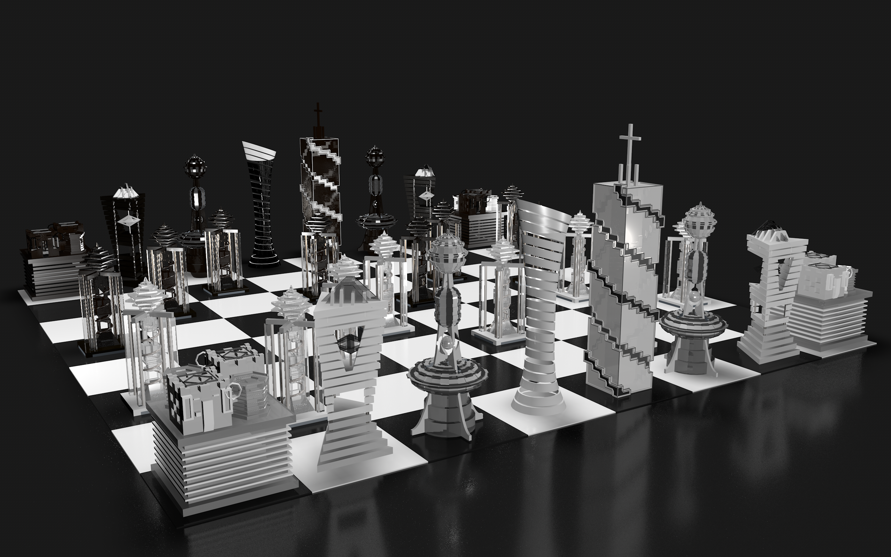

projects
project titles
Architect's Chess
Description
Inspiration
I see the world with a polarized perspective, just like a Chess Board. It is all white or all black for me. I am also fascinated by architecture all around the world. I modeled a chess set inspired my modern architecture with a pattern of trigonometric and geometric shapes using the software Cinema4D.
Inspiration
I see the world with a polarized perspective, just like a Chess Board. It is all white or all black for me. I am also fascinated by architecture all around the world. I modeled a chess set inspired my modern architecture with a pattern of trigonometric and geometric shapes using the software Cinema4D.
Methodology
I wanted to exploit the basic modeling tools on the software as much as possible. I wanted to create something using a combination of sculpting tools which followed a similar pattern. Hence, a chess set.
Methodology
I wanted to exploit the basic modeling tools on the software as much as possible. I wanted to create something using a combination of sculpting tools which followed a similar pattern. Hence, a chess set.
Projection
The front view of the pieces

Projection
The front view of the pieces